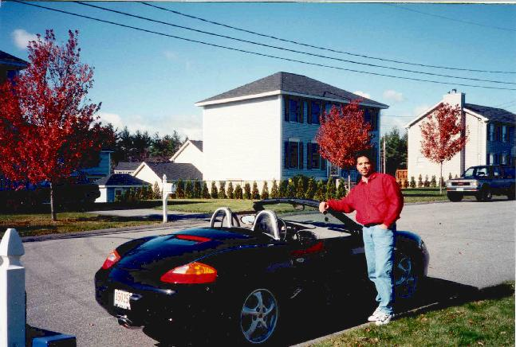
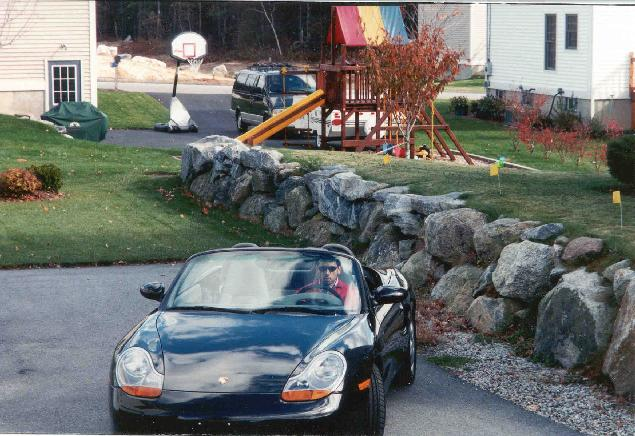

Here's me the day I picked up my Porsche Boxster from the dealership; it was a beautiful Fall day (end of October 1998, about 60 degrees out and sunny). (Sorry for the picture quality -- these were taken with a non-digital camera and then scanned in and then shrunk, etc.) Only after about a day did I notice the cover not properly installed on my driverside rollbar hoop (I put it back on). I was quite happy this day.

Still figuring out how to drive the car, I back out of the garage to get to know the car and all its dash components.
